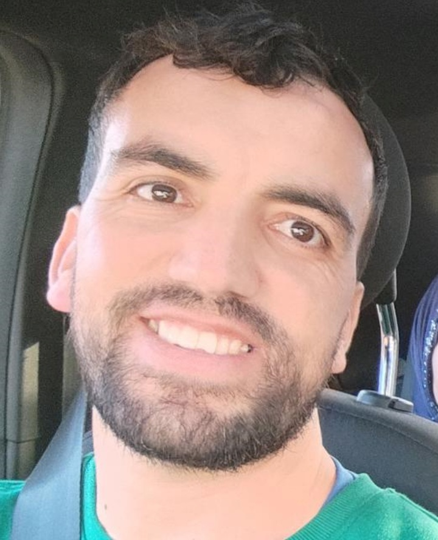

Lectura
M'agrada llegir sobre cultura, història i comunicació per seguir ampliant vocabulari i idees.

Traductor, intèrpret i redactor tècnic de documentació.
Professional amb experiència en traducció entre àrab, espanyol i francès, interpretació en reunions i redacció de documentació funcional i tècnica. Em defineixen la comunicació clara, l'organització i el gust per aprendre de cultures, idiomes i projectes distintos.
He treballat en projectes de traducció, docència i interpretació per a equips multiculturals. També tinc formació en eines digitals, disseny gràfic i desenvolupament web, cosa que m'ajuda a connectar llenguatge, contingut i estructura d'una manera molt pràctica.
M'agrada llegir sobre cultura, història i comunicació per seguir ampliant vocabulari i idees.

Gaudeixo coneixent ciutats noves, observar costums distints i aprendre de l'entorn.

La meva estimada Luna (està al cel ara) va ser una companya que em va ensenyar a ser un amant dels animals.